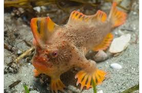

Pela primeira vez na história moderna, uma espécie de peixe marinho foi declarada extinta. O peixe-mão liso (Sympterichthys unipennis), habitante de águas rasas, com barbatanas pontiagudas e uma saliência na testa parecida com uma barbela, não é avistado desde 1802, quando o biólogo francês François Péron ajudou a capturar um exemplar perto da costa da Tasmânia para levá-lo anos Museu de História Natural de Paris.
Apesar de extensas buscas ao longo de muitos anos, nenhum outro peixe-mão liso foi visto novamente. Em maio, a União Internacional para a Conservação da Natureza (IUCN), um consórcio global de cientistas que determina o estado de conservação das espécies, formalmente o classificou como extinto..

Outras treze espécies de peixes-mão que são chamados assim porque se apoiam no fundo do mar em nadadeiras que se parecem com pequenas mãos e fazem as vezes de pés provavelmente ainda estejam por aí, embora sete delas não tenham sido avistadas desde 2000 ou antes. Todas as espécies, exceto uma, são consideradas ameaçadas, criticamente ameaçadas ou com “dados deficientes”, o que significa que não há informações suficientes disponíveis para definir seu status..
O desaparecimento do peixe-mão liso destaca o quanto essa família de peixes é sensível às perturbações ambientais, como mudanças climáticas, destruição do habitat e poluição, já que o peixe-mão liso era bastante numeroso quando os cientistas o documentaram pela primeira e última vez, mais de 200 anos atrás. Os cientistas dizem que esse marco serve como um alerta para o que pode acontecer com outras espécies de peixes-mão e outras espécies vulneráveis e localizadas em lugares como a Tasmânia..
“Eles são um sinal de alerta de que há um perigo iminente”, disse Neville Barrett, ictiólogo do Instituto de Estudos Marinhos e Antárticos da Tasmânia.
Rafael A.Costa
Em 04/05/2021 Aula ADS - RWD
Disponível em:
POR DOUGLAS MAIN PUBLICADO 1 DE SET. DE 2020 17:00 BRT